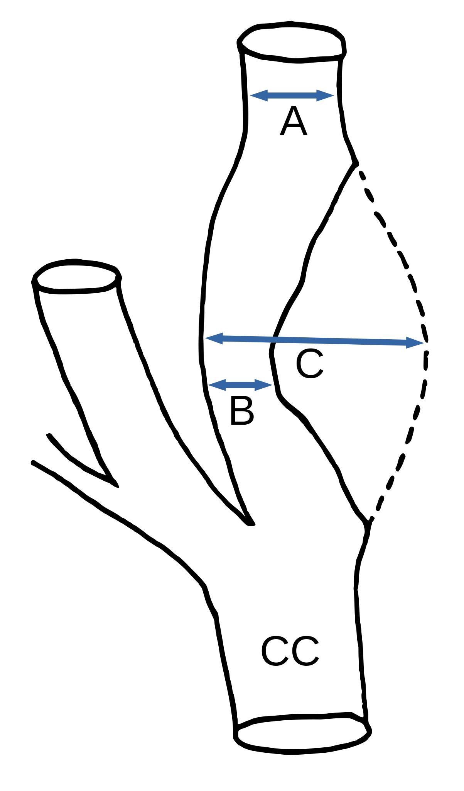

Débit de Filtration Glomérulaire (DFG) estimé de l'adulte
MDRD - ml/min/1,73 m2 de DFG
CKD-EPI - ml/min/1,73 m2 de DFG
Standardisation IDMS (indispensable pour l'équation du CKD-EPI)
Cockcroft - ml/min de clairance de créatinine
Remarque : La formule de Cockroft et Gault est conservée pour des raisons historiques (cf infra).
Débit de Filtration Glomérulaire (DFG) estimé de l'enfant
Estimation à partir de l'équation de Schwartz modifiée.
DFG - ml/min de clairance de créatinine/1,73m²
Débit de filtration glomérulaire absolu
Le DFG est habituellement relatif, c'est à dire exprimé en ml/mn/1,73m² (rapporté à sur une surface corporelle normale). Pour les dosages de médicaments à excrétion rénale, le DFG absolu, ajusté à la surface corporelle de l'individu, est recommandé. Cf. réf.
DFG absolu - ml/min de clairance de créatinine
| Stade | DFG | Définition |
|---|---|---|
| 1 | ≥ 90 | Maladie rénale chronique* avec DFG normal ou augmenté |
| 2 | 60-89 | Maladie rénale chronique* avec DFG légèrement diminué |
| 3 A | 45-59 | Insuffisance rénale chronique modérée |
| 3 B | 30-44 | Insuffisance rénale chronique modérée |
| 4 | 15-29 | Insuffisance rénale chronique sévère |
| 5 | < 15 | Insuffisance rénale chronique terminale |
*Avec marqueurs d’atteinte rénale : protéinurie clinique, hématurie, leucocyturie, ou anomalies morphologiques ou histologiques, ou marqueurs de dysfonction tubulaire, persistant plus de trois mois.
Selon les fiches CIRTACI, les facteurs d'insuffisance rénale aiguë post-constraste sont :
- Liés au patient
- L'insuffisance rénale aiguë ou chronique.
- La déshydratation marquée.
- Liés à la procédure
- Fortes doses de produit de contraste administrés en intra-artériel avec exposition rénale au premier passage.
- Multiples injections de produit de contraste dans les 48 ou 72 heures.
- Actes interventionnels cardio-vasculaires.
Les seuils à risque sont :
- Risque si DFG < 45 ml/min/1,73 m² en cas de voie artérielle de 1er passage
- Risque si DFG < 30 ml/min/1,73 m² sinon (voie veineuse ou artérielle de 2e passage.)
- MDRD :
MDRD=186*(creat*.0113)-1.154*age-.203*ethnie*genre) où ethnie=1.212 pour les Afro-Américain et 1 sinon ; où genre=0.742 pour les femmes et 1 sinon.
- Cockcroft-Gault :
HAS 2012 : la formule de Cockcroft et Gault estime, non le DFG (en mL/min/1,73 m2), mais la clairance de la créatinine (en mL/min). Formule historique pour l'adaptation des posologies des médicaments.
MDRD_Cockcroft=round(((140-age)/creat)*poids*k) où k=1.23 pour hommes et 1.04 sinon.
- CKD-EPI :
HAS 2012 : Estimation du DFG : CKD-EPI est l’équation la plus fiable.
Ici, CKD=round( 141* min(creat/k, 1)^(-0.411 si homme sinon -0.329) * max(creat/k, 1)^-1.209 * 0.993^age * (1 si homme sinon 1.018) * (1.159 si Afro-Américain sinon 1) ) ; k = 0.9 si homme sinon 0.7 ; creat : 113,1179 g/mol pour la conversion en mg/dl.
- équation de Schwartz :
DFG_Schwartz = 0.413*taillecm/creatmgdl
Le DFG normal avant 2 ans pourra être consulté sur Pediatrics in review
- DFG absolu :
Calcul simple à partir de l'équation de Dubois et Dubois : DFGabs=DFGrel/1.73*0.007184 * taillecm0.725 * poidskg0.425
- Expérimentalement, ce calculateur reproduit à l'arrondi près les valeurs de celui de la Société Francophone de Néphrologie Dialyse et Transplantation ; de celui de l'Université de Lund pour le DFG absolu, et de celui du site mdcal pour l'équation de Schwartz modifiée.
- Voir également Estimer le débit de filtration glomérulaire par l’équation CKD-EPI de l'HAS.
Probabilité de malignité d'un nodule en TDM (Modèle de Brock)
Probabilité de malignité* - %
- *Ceci est la probabilité qu'un tel nodule chez un tel patient, sera diagnosticable comme un cancer pendant un suivi standard de 2 à 4 ans. Réf.
- Expérimentalement, ce calculateur reproduit les valeurs de celui de l'université de Brock dit « Nodule Malignancy Prediction Calculator (full model) »
- Les recommandation BTS (British Thoracic Society) datent d'août 2015 et sont utilisées ici à défaut de recommandations françaises (oct. 2021). Réf.
Probabilité de malignité d'un nodule en TEP (Modèle de Herder) pour les nodules solides
- Aucune : fixation indiscernable de celle du parenchyme pulmonaire.
- Faible : Fixation ≤ à celle du secteur vasculaire médiastinal.
- Modérée : Fixation > à celle du secteur vasculaire médiastinal.
- Intense : Fixation nettement > à celle du secteur vasculaire médiastinal.
Remarque : de manière surprenante, l'étude Herder ne définit pas les termes de son échelle de fixation. L'échelle donnée ici est celle-proposée par les recommandations BTS à fin de standardisation (grade D).
Probabilité de malignité* - %
- Le modèle de Herder ajoute l'intensité de la fixation au TEP-FDG au modèle de la Mayo Clinic. Le modèle d'Herder était un peu plus fiable (+13,6% d'AUC) que le modèle de la Mayo Clinic (et de Brock ). Dans l'étude de Herder, 106 patients avec un seul nodule pulmonaire de moins de < 30 mm furent inclus. Les patients ayant un ATCD de cancer dans les 5 ans précédant la TEP, etc. avaient été exclus.
- Plus sur les AUC des modèles : Brock : 0,902 ; IC95%[0,856–0,948] , AUC Herder 0,924, IC95%[0,875–0,974] Risk of malignancy in pulmonary nodules: A validation study of four prediction models, Ali Al-Ameri et al., Chest 2015
AUC Herder (publication initiale) : AUC 0,92 ; IC 95% [0,87–0.97] Herder GJ et al. Clinical prediction model to characterize pulmonary nodules: validation and added value of 18F-fluorodeoxyglucose positron emission tomography. Chest
AUC Brock : 0,96 ; IC95%[0,93–0,98] McWilliams A et al. Probability of cancer in pulmonary nodules detected on first screening CT. N Engl J Med
Temps de doublement
Examen 1
ou
Si le champ "Volume du nodule" est rempli, il sera utilisé en priorité.
Le champ "volume approximatif" admet une valeur en mm (ex pour 5 mm saisir "5" ; pour 5*6 mm saisir "5*6" ; pour 5x6x7 mm saisir "5-6-7". On peut utiliser les caractères * ou - ou x pour séparer les dimensions.).
Pour info, voici le mode de calcul : Avec une dimension, on peut estimer le volume par X³/2.
En 2D, par X*Y*((X+Y)/2)/2).
En 3D, par le volume du prisme X*Y*Z/2.
Examen 2
ou
Temps de doublement -
- Ces recommandations (BTS) sont pour les nodules solides.
- Selon les recommandations BTS, le temps de doublement est idéalement à utiliser avec la volumétrie (mesure automatisée du volume), afin de contrôler les nodules à 1 an pour les nodules de 5-6mm et à 3 mois pour les nodules ≥6mm. Il faut évidemment utiliser le même algorithme, le même scanner idéalement, ne pas mesurer un ganglion intra-pulmonaire..., etc.
- La BTS conseille (grade C), de considérer comme significative, une croissance volumique ≥25%.
- Un VTD entre 30 et 400 jours est suspect.
- Les nodules ≥8 mm ne doivent être suivis (BTS) que si leur probabilité de malignité est <10% (Brock, Herder).
- Ce calculateur a été testé contre celui de Tore Sjøbod et l'application P-Nodule Risk.
RECIST 1.1
| Lésion | Avant | Aujourd'hui |
|---|---|---|
| 1 | ||
| 2 | ||
| 3 | ||
| 4 | ||
| 5 | ||
| Somme (manuel) | ||
| Somme (auto) | - | - |
RECIST -
- Cibles
- Mesurables : si ≥ 10mm, ou si ≥ 15 mm de petit axe pour les adénomégalies.
- 5 cibles ; max. 2 cibles par organes.
- Réponse complète (RC) : Disparition de toutes les lésions. De plus, tous les ganglions lymphatiques (cible ou non-cible), doivent avoir atteint une dimension < 10 mm dans leur plus petit axe.
- Attention : les ganglions sélectionnés comme lésions cibles doivent toujours être mesurés (dimension du plus petit axe dans le plan anatomique utilisé pour l’examen BASELINE), même s’ils diminuent en taille durant l’étude et que leur petit axe devient < 10 mm.
- Dès lors, lorsque des ganglions sont utilisés comme lésion cible, la « somme » des dimensions des lésions n’est pas nécessairement nulle, même en cas de réponse complète, puisqu’un ganglion normal est défini comme ayant un plus petit axe < 10 mm.
- Réponse partielle (RP) : Diminution d'au moins 30 % de la somme des diamètres des lésions cibles par rapport à la somme initiale des diamètres (Examen BASELINE).
- Progression (PD) : Augmentation ≥ 20 % de la somme des diamètres des lésions cibles par rapport à la plus petite somme des diamètres observée durant l’étude (NADIR), y compris la visite de baseline. En plus de cette augmentation relative de 20%, cette somme doit augmenter d’au moins 0,5 cm.
- Nota bene : l’apparition d'une ou plusieurs nouvelles lésions est également considérée comme progression.
- Attention : s’il existe une progression par rapport au NADIR et une réponse par rapport à l’examen BASELINE, c’est la progression qui prévaut.
- Stabilisation (SD) : Ni RP (ou RC), ni PD.
- Source de cet extrait : Fiche RECIST de la cohorte des Carcinomes Endocrines Peu Différenciés. Résumé excellent à lire pour les autres critères.
Lymphomes, Lugano
| Lésion (mm) | Avant | Aujourd'hui |
|---|---|---|
| 1 | ||
| 2 | ||
| 3 | ||
| 4 | ||
| 5 | ||
| 6 | ||
| Hauteur rate (mm) | ||
| Somme (manuel) | ||
| Somme (auto) | - | - |
Lugano -
- Entrer les deux axe dans une même cellule (ex : 15*10 ou 15-10).
- Si la somme est entrée en manuel, alors les tailles des cibles de la colonne seront ignorées.
- Si une lésion s'est fragmentée, séparer les fragments par "+" (ex : 15*6+16*8).
| Stade | Étendue de l'atteinte | |
|---|---|---|
| Limité | I | Une adénomégalie ou groupe d'adénomégalies adjacentes |
| II | Deux (ou plus) groupes d'adénomégalies du même coté du diaphragme | |
| Avancé | III | Ganglions de part et d'autre du diaphragme Ou Ganglions sus diaphragmatiques avec atteinte splénique |
| IV | Atteinte extra-ganglionnaire non adjacente à l'atteinte ganglionnaire | |
Considérés comme ganglion
- Rate (pour Hodgkin)
- Anneau de Waldeyer
-
Aires ganglionnaires sus diaphragmatiques
-
Aires ganglionnaires périphériques accessibles à la palpation
-
Cervicales
-
Sus-claviculaires
-
Axillaires
-
Aires ganglionnaires profondes médiastinales
-
Médiastin supérieur
-
Médiastin antérieur
-
Médiastin moyen
-
Hiles
-
Médiastin postérieur / Espace infra-médiastinal postérieur
-
Diaphragmatiques / Péricardiques
-
Aires ganglionnaires sous-diaphragmatiques
-
Aire ganglionnaire périphérique accessible à la palpation
-
Inguinale
-
Aires ganglionnaires profondes abdominales
-
Cœliaque
-
Hilaire hépatique
-
Hilaire splénique
-
Péripancréatique
-
Mésentérique
-
Rétropéritonéale médiane
-
Iliaque primitive / externe / interne
- Jusqu'à 6 lésions des plus grandes lésions (dans deux plans orthogonaux), représentatives des régions atteintes, en incluant l'atteinte médiastinale et rétropéritonéale (si elle existe).
- Les ganglions de grand axe >15mm.
- Les masses non-ganglionnaires de grand axe > 10 mm (ex. nodule hépatique)
- Les autres lésions (autres masses, os, épanchements...) sont non-cibles.
Atteinte splénique ?
- Par définition, si la hauteur de la rate est > 13cm (donner la taille de la rate).
- En cas de nodules spléniques.
Cas particuliers
- Si une lésion n'est plus visible, on la compte à 0*0.
- Si une lésion est visible mais trop petite pour être mesurée, on la commpte à 5*5mm
- Si une lésion s'est fragmentée, on compte la somme des produits des petites lésions.
- Bulky
- une adénomégalie isolément (par apposition à un amas de ganglions) >10 cm ou > à 1/3 du diamètre thoracique au scanner (quelque soit le niveau thoracique).
- diamètre du médiastin tumoral / thorax > 1/3 en T5-T6 en radio de thorax.
- atteinte d'au moins 4 aires ganglionnaires distinctes.
| Indolents | Agressifs |
| L. folliculaires grade 1-2 | L. B diffus grandes cellules |
| L. zone marginale | Hodgkin |
| LLC | L. folliculaires grade 3 |
| ... | L. T |
| Burkitt ... |
(critères d'imagerie du GELF)
- masse > 7 cm de grand axe
- envahissement d'au moins 3 sites ganglionnaires (chacun >3cm dans son plus grand diamètre)
- syndrome compressif
- épanchement pleural ou péritonéal spécifique (⊕ à la ponction)
- Progression (par rapport au Nadir)
- Nouvelle lésion
- ou progression claire d'une lésion non-cible
- ou augmentation >50% du produit des diamètres d'une lésion >15mm
- augmentation ≥5mm si lésion ≤20mm ; ≥10mm si lésion >20mm
- ou augmentation de la rate
- de plus de 50% de la hauteur >13cm ou de >2cm si hauteur ≤13cm
- Réponse partielle (par rapport au Baseline)
- Si pas de progression
- Et si diminution de la SPD ≥50% ET régression de ≥50% de la hauteur de rate >13cm.
- Réponse complète
- Si critères de PR
- et plus de lésion d'organe ET plus d'adénomégalie (grand axe≤15mm ET petit axe ≤10mm)
- Maladie stable sinon (ni PD, ni PR, ni CR)
- Cours des JFR2021 du CHU de Clermont Ferrand qui m'a beaucoup aidé.
- The Lugano Classification, Oncology 2014
Algorithmes décisionnels
- prise en charge des nodules pulmonaires. (Radiology assistant)
- fréquence de suivi (sans volumétrie).
- fréquence de suivi (sans volumétrie).
Remarques :
- Les recommandations Fleischner sont applicables aux nodules de découverte fortuite, âge > 35 ans.
- Et inapplicables en cas de dépistage, cancer connu, immunodépression.
Calcul du washout surrénalien (lavage) en scanner
Wash out relatif -
Wash out absolu -
Chute de signal en IRM
Remarque : L'analyse est d'abord visuelle. Les rapports de chute de signal sont une aide débattue.
Chute signal surrénale -
Chute signal surrénale/rate -
Algorithme décisionnel
- Contexte ? (oncologique, syndrome hormonal, hématome, tuberculose...)
- Si la masse est > 6cm ou à croissance rapide, elle est suspecte (25% de néoplasies après 6cm); les adénomes sont <4 cm et homogènes.
- Si la densité spontanée est <10U.H., → STOP : en faveur d'un adénome (riche en graisse) (seuil pour Se 71% ; Sp 98% cf. réf)
- Remarque, les informations infra sont données pour les adénomes pauvres en graisse (Les seuils et couples Se/Sp sont différents sinon) et non-nécrotiques.
- Calcul du washout (W.O.) relatif et absolu au scanner
- Si le W.O. absolu est ≥ 60% ou le W.O. relatif ≥ 40% (pour un temps tardif à 15') → en faveur d'un adénome. (Se 89%, Sp 95% et Se 83% Sp 93% respectivement, le W.O. absolu est un rien plus performant. cf. réf)
- Remarque, les seuils sont respectivement 50 et 40% pour un tardif à 10', mais avec une moindre précision diagnostique. Réf.
- Cependant, certains adénomes se lavent précocément. Si le W.O. relatif est > à 40% sur une TDM multiphasique, le diagnostique d'adénome peut être porté avec confiance sans scanner surrénalien dédié.
- Sinon c'est indéterminé en TDM et il faut calculer la chute de signal en IRM.
- Si la chute de signal est > 16,5% → en faveur d'un adénome. Visuellement, l'adénome se rehausse précocément et se lave.
- Sinon, c'est indéterminé → TEP (fixe moins que le foie (ou moins de 1,5x le foie) habituellement) ; histologie ; surveillance.
- Explorations hormonales.
- Suivi : pas de suivi en imagerie pour les masses clairement bénignes < 4 cm et < 10U.H. selon la société Européenne d'Endocrinologie ESE 2016. En cas de doute sur une métastase mimant un adénome, un suivi est cependant utile.
Masses mimant des adénomes
- Métastases riches en graisses (CHC...)
- Métastases hypervasculaires (CHC, rein...)
- Phéochromocytomes (riche en graisse, hypervasculaire)
Références
L'auteur de cette application se présente en tant que programmateur amateur sans autre titre ni prétention.
Cette application est fournie à titre informatif et sans aucune garantie. Elle s'adresse à un public averti ayant une formation médicale. En aucun cas les informations qu'elle apporte ne peuvent se substituer à une consultation médicale ni réaliser un diagnostic. Bien que j'ai apporté du soin à sa réalisation, des erreurs peuvent persister. Les différents calculateurs ont été testés manuellement contre d'autres calculateurs déjà publiquement accessibles. Néanmoins, le code n'a évidemment pas été audité. La saisie de l'utilisateur est grossièrement vérifiée, mais une erreur de saisie de votre part pourrait produire un résultat aberrant. Cette application ne se substitue pas au raisonnement médical et tout résultat devrait être interprété avec un oeil critique.
Cette application n'est pas un produit médical professionnel.
Le code source que j'ai rédigé est placé sous la licence CeCILL de droit français, qui respecte les principes de diffusion des logiciels libres (cf infra).
En poursuivant l'utilisation, vous acceptez ces conditions sans réserve. Veuillez prendre connaissance de la licence et l'accepter.
- Sur Android, dans l'App Store, installer Radcalc (Auteur Aldoniel). Lien direct si besoin.
- Sur tous navigateurs (PC, téléphones) version en ligne
- Pour iOS(c), il faut ouvrir la version navigateur dans Safari, puis dans le menu du bas, toucher "partager" (l'icône boîte avec une flèche haute), puis glisser vers le haut ("swipe" haut), puis défiler dans la liste jusqu'à "Ajouter à l'écran d'accueil".
- Il faut ensuite ouvrir l'application une fois depuis son icône sur l'écran d'accueil du téléphone et elle devrait ensuite fonctionner en mode hors ligne.
- Sur Chrome sous Android, le menu ajouter à l'écran d'accueil est présent dans les options générales de la page web en haut à droite. (Installation en tant qu'application web progressive).
- Les informations sont traitées localement, hors ligne.
- Il n'y a pas de contenu distant en dehors des hyperliens.
- Il n'y a pas de publicité (ni aucun financement externe.)
- Le code est un mélange de python via Brython, de W3.CSS, html, javascript.
- L'application est portée sur android par Cordova.
- Les jolies icônes sont de OpenMoji, le sigle du chaos qui sert à caser les onglets divers est de Fibonacci sous licence GFDL
- La fonction Zoom it! est de anitasv
- Vous pouvez me contacter à -
Sténose
Sténose : -
Équivalence % ECST → NASCET
NASCET : -
- Il ne s'agit pas d'une conversion, mais d'une approximation basée sur l'hypothèse communément admise que le diamètre du bulbe vaut deux fois celui de l'ACI en aval (cas le plus fréquent, mais pas forcément adapté à l'anatomie du patient).
- On en déduit grâce à une brillante résolution d'équation que Nascet = 2*ECST-100 (en ignorant les valeurs négatives).

|
|
NASCET et recommandations grade A HAS 2018 Réf.
- Sténose athéroscléreuse symptomatique de la carotide interne extracrânienne
- Sténose comprise entre 70 et 99 % (critères NASCET) : endartériectomie carotidienne chez les patients avec un IC non invalidant ou un AIT, de moins de 6 mois
- Sténose carotidienne comprise entre 50 et 69 % : endartériectomie carotidienne possible en prenant en considération certaines caractéristiques du patient et de l’accident ischémique cérébral.
- Sténose de la carotide interne < 50 % : pas d’indication chirurgicale.
Volume gonadique
Volume : -
- La littérature est assez confuse sur la manière correcte de calculer le volume gonadique masculin* ainsi que les normes.
- La normale souvent avancée est 15-20mL (ex : Réf) et atrophie si < à 6mL. La société française d'endocrinologie donne une normale >12mL à l'orchidomètre.
- Cependant, pour la même normale (!), certains préconisent la formule de l'ellipsoïde (0,52*x*y*z où π/6#0,52) par défaut dans les échographes, tandis que d'autres promeuvent la formule de Lambert : 0,72*x*y*z.
- Sur la base de corrélations au volume réel sur spécimen, la formule de Lambert était la plus proche sur deux études et est donc retenue ici. (Réf1 Réf2).
- * (La politique de chasteté de l'android store ne permet pas de mentionner son nom impudique)
- Le volume ovarien se calcule par la formule de l'ellipsoïde (cf. supra ou onglet en haut à gauche volume ellipsoïde), qui est normalement déjà dans l'échographe.
- La société française d'endocrinologie donne une normale d'un ovaire à 4-11 mL chez la femme adulte jusqu'à 35 ans
Conversion volume ellipsoïde → Lambert
Pour convertir le volume en général calculé par les échographes.
Volume Lambert : -
Surface ovarienne
Surface : -
- La société française d'endocrinologie donne une normale d'un ovaire à 2,5-5,5 cm² chez la femme adulte jusqu'à 35 ans.
- Surface = x*y*0.008 (en mm → cm²)
EU-TIRADS 2017
| 2 | 3 | 4 | 5 |
|---|---|---|---|
| anéchogène ou entièrement spongiforme | entièrement isoéchogène ou hyperéchogène | modérément hypoéchogène | forme non ovale ou contours irréguliers ou microcalcifications ou hypoéchogénicité marquée |
| Indication des cytoponctions | |||
| si compressif et >20mm | >20mm | >15mm | >10mm ou ≤10 et
|
*la ponction du ganglion avec dosage in situ de thyroglobuline doit être systématique
Source http://ti-rads.com
Risque d'accident coronarien à 10 ans, MESA 2015
Risque à 10 ans d'accident coronarien (hors score calcique): -
Risque à 10 ans d'accident coronarien (avec score calcique): -
- Ici, la prise d'un traitement est un facteur de risque dans l'équation... C'est un lien statistique non-causal lié au risque plus élevé de la population traitée. (Réf. MESA)
- Ce calculateur a été testé contre celui de référence.
- Lien vers le calculateur de percentile MESA pour le score calcique (algorithme non publié, non reproductible ici).
Volume ellipsoïde
Volume : -
- La formule utilisée est x*y*z*π/6000 (mm -> mL) que l'on approxime en général par x*y*z/2000 ou mieux par x*y*z*0,52/1000.
- L'approximation est correcte pour ce qui se rapproche de la forme d'une sphère ou d'un oeuf.
IMC et surface corporelle
Surface : -
IMC : -
- Le choix de l'équation de la surface corporelle est délicat car il en existe un grand nombre, certaines a priori plus précises que d'autres, sans que la différence entre les meilleures soit cliniquement très significative (car les meilleures formules donnent des résultats voisins qui se perdent dans l'arrondi, alors même que la surface corporelle donne une impression de rigueur scientifique tout en ignorant les variants enzymatiques, rénaux, vasculaires etc.). La formule de Mosteller, établie en 1987, est une approximation de la formule de Gehan and George (obtenue en 1970 par mesure directe sur 401 individus). Elle a l'avantage unique de donner le même résultat si on inverse le poids et la taille par erreur [Mosteller = (taille_cm * poids_kg /3600)0,5] tout en restant précise, valable chez l'enfant, simple. Elle est recommandée par l'Action Cancer Ontario.